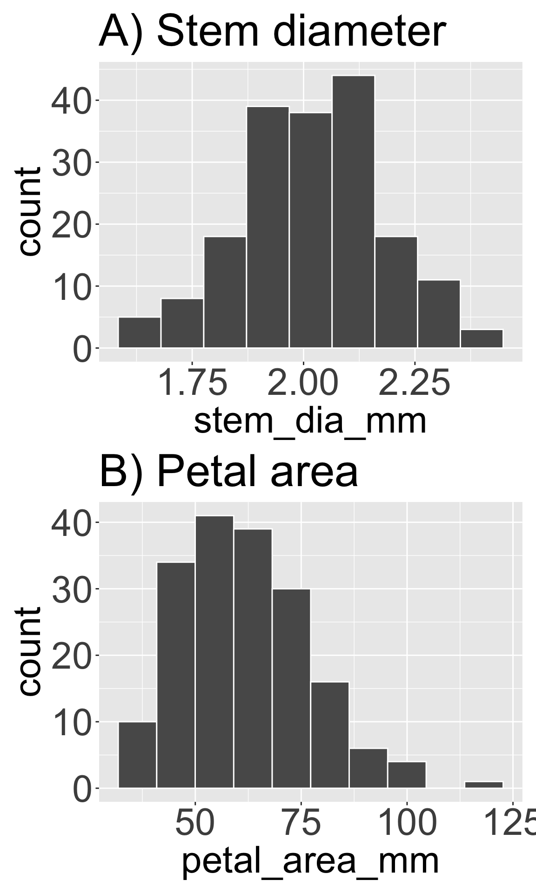
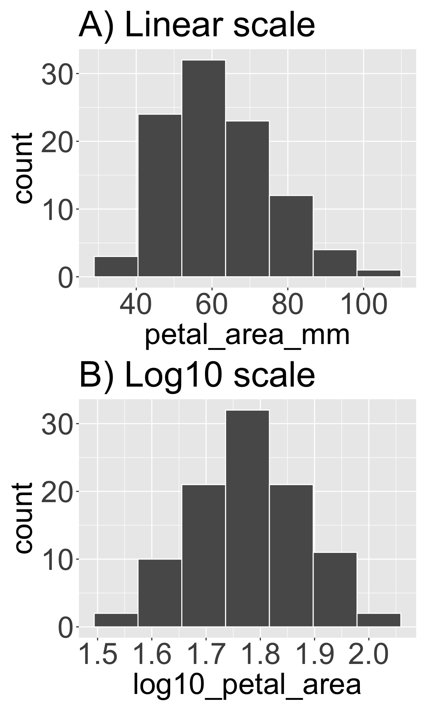

Motivating Scenario:
Your data are not symmetric, you are wondering about potentially changing the shape of your data to make it easier to deal with. Here I introduce some thoughts and guidance about common data transformations and when to use them.
Learning Goals: By the end of this subchapter, you should be able to:
Understand what a transformation is and know when they are (or are not) a good idea, and how they connect to the process that generated your data.
Know the rules for a legit transformation and be aware of common “gotchas” which accidentally break these rules.
Recognize which transformations are appropriate for different skews of data.
Right skewed data – Try log, square root, or reciprocal transformations.
Left skewed data – Try exponential or square transformation.
Statistical approaches should follow biology

Figure 1: Different biological traits follow different natural distributions. Panel A shows the distribution of stem diameter (mm) in a recombinant inbred line (Clarkia RIL) dataset, which is approximately symmetric and normally distributed. In contrast, panel B displays the distribution of petal area (mm²), which exhibits a right-skewed, exponential-like distribution.
There is nothing inherently “natural” about the linear scale — in fact, some research (review by Asmuth et al. (2018)) suggests that humans naturally think in log scale, and only begin thinking in linear scale with more formal schooling. That is, kids tend to think that the difference between seventy-five and eighty is smaller than the difference between five and ten. In a sense, they’re right — ten is double five, while eighty is only \(\frac{16}{15}\) of seventy-five. Of course, in another sense, they’re wrong — the difference is five in both cases.
It turns out that different variables naturally vary on different scales. For example, growth rate, area, volume, and other such processes often generate right-skewed data (growth is exponential — at least initially — area scales with the square of length, volume scales with the cube, etc.). It’s therefore not surprising that Clarkia stem diameter in the RILs has a fairly symmetric distribution, while petal area is right-skewed (Figure 1).
By contrast, variables that exhibit diminishing returns or are constrained by hard limits often result in left-skewed distributions (as we saw in our genotyping efforts, where we aimed to genotype eight seeds per mom — and no more — but sometimes ended up with fewer).
To transform or not to transform? That is the question
When the underlying biological process results in nonlinear data with asymmetric distributions, transforming the data is often appropriate — even if you don’t know the specific biological mechanism. So: transforming your data is often OK, but is it a good idea?
Why transform? Because linear and symmetric data are often easier to interpret and typically better suited for statistical modeling.
Why not transform? Truth and clear understanding of data is more important than having symmetric distributions. So while transforming is perfectly legitimate, it can make your results harder to communicate (I, for one, find thinking on the log scale difficult — even if four-year-olds do not), since most people are accustomed to a linear world. You may also worry that knee-jerk transformation might hide the very biological processes that we are aiming to understand. Finally, some data can’t be made symmetric or unimodal no matter what transformation you apply. For example, it’s rare for transformations to make multimodal data unimodal. So take this all into consideration before jumping to transform your data to make it have an appealing shape.
Rules for Transforming Data
In addition to letting biology guide your decisions, there are some actual rules that determine when a transformation is legitimate:
Transformed values must have a one-to-one correspondence with the original values. For example, don’t square values if some are negative and others positive — you’ll lose information.
Transformed values must maintain a monotonic relationship with the original values. This means that the order of values should be preserved — larger values in the original data should remain larger after transformation.
Transformations must not bias results by inadvertently dropping data. For example, this can happen when a log transformation fails on zero or negative values, or if extreme values are removed during transformation.
Transformation in R

Figure 2: Applying a log10 transformation can change the shape of a dataset. Panel A shows the distribution of Clarkia petal area (mm²) on a linear scale, where the data are right-skewed. Panel B shows the same data after a log10 transformation, which reduces skewness and results in a more symmetric distribution.
Transformation in R is remarkably straightforward. Simply use dplyr'smutate() function to add a transformed variable. Below, I show a log base 10 transformation — one of the most common and useful approaches for right-skewed data (see the next section for a more thorough description of this and other common transformations). As discussed in the previous chapter, Figure 2 shows that this transformation changes the shape of the petal area distribution from right-skewed to roughly symmetric.
Applying the right transformation can improve interpretability, meet statistical assumptions, and connect patterns to process. The table below introduces some of the more common transformations you will run into.
Asmuth, J., Morson, E. M., & Rips, L. J. (2018). Children’s understanding of the natural numbers’ structure. Cognitive Science, 42(6), 1945–1973. https://doi.org/https://doi.org/10.1111/cogs.12615